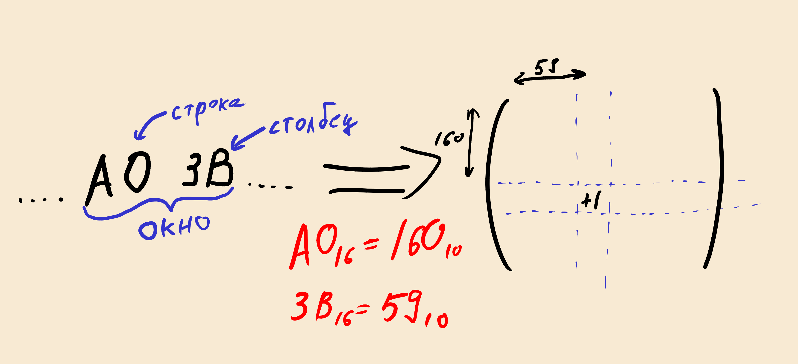
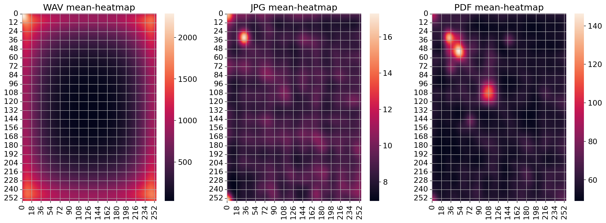

Немного про работу с файлами, numpy и предсказаниях
Введение
Известно, что файлы в памяти представлены последовательностью байтов. Структурно, эта последовательность может быть разной. Она может содержать только ASCII-текст, текст с любой кодировкой, сжатый архив, mp3, etc. При взаимодействии с файлом (например, открыть файл текстовым редактором), операционная система не смотрит на т.н. расширение файла, её интересует побайтовое содержание файла.
В Unix для определения типа файла есть утилита file. Как она
определяет тип я точно не знаю, но могу сказать, что частично метод
основан на "заголовке" файла (первых байтах).
Пример работы file на исполняемом файле:
./program: ELF 64-bit LSB pie executable, x86-64, version 1 (SYSV), dynamically linked, ...
Шестнадцатеричное представление (первые несколько строк) с помощью
xxd:
00000000: 7f45 4c46 0201 0100 0000 0000 0000 0000 .ELF............
00000010: 0300 3e00 0100 0000 6010 0000 0000 0000 ..>.....`.......
00000020: 4000 0000 0000 0000 c036 0000 0000 0000 @........6......
00000030: 0000 0000 4000 3800 0d00 4000 1f00 1e00 ....@.8...@.....
В начале видно последовательность ELF -- формат исполняемых файлов в
Unix[1].
Возникает вопрос: есть какой-то паттерн для различных типов файлов, который можно увидеть, не считая специальных симвовол в заголовке?
Можно усложнить вопрос: можно ли по какому-то обобщению (сигнатуре) файла предсказать его тип? Попробуем это выяснить.
Для этого нужно решить следующие задачи:
- Написать модуль (на Си), который по имени файла просчитывает сигнатуру и возвращает её;
- Посмотреть, как выглядят эти сигнатуры;
- Попробовать обучить простую нейросеть.
Как считать сигнатуру файла
Возьмем нулевую матрицу M размера 256х256, так как один байт это
число от 0 до 255. Считаем файл в память в виде последовательности
байтов. Теперь будем двигаться по последовательности с окном
размера 2. В этом окне первый элемент будет отвечать за номер строки,
а второй за номер столбца. И каждый раз с окном (x, y) будем
увеличивать элемент матрицы M[x][y] на единицу.

Причины использования Си
Если кратко: python очень медленный. Например, средний wav-файл
занимает около 10 мегабайт. Это порядка десяти миллионов байт, по
которым нужно пробежать и заполнить матрицу. А для обучения нейросети,
таких файлов должно быть много.
Отдельный интерес, также, представляет возможность написать модуль для python на C, который умеет взаимодействовать с API библиотеки NumPy.
Чтение файлов в память
Для чтения файла в память, был написан модуль на Си, доступный репозитории[2]. Здесь кратко опишу, как он работает.
В нем реализована функция signature_from_filepath_by2, которая
получает на вход два параметра: имя файла и уровень verbose. by_2
в названии обусловлено тем, что работа не с матрицами, а n-мерными
тензорами улучшает качество предсказания.
Функция read_file считывает файл в структуру raw_data, которая
представляет собой просто последовательность байтов и размер этой
последовательности. После этого функция build_matrix считывает по
этой струтуре сигнатуру и записывает в matrix.
Далее создается объект PyObject *result, представляющий собой
указатель на массив NumPy типа uint32. На его основе создается
динамический массив result_data.
Так как matrix лежит в памяти последовательно (ввиду того, что
она аллоцирована на стеке), то её можно просто скопировать в
result_data. После всего этого возвращается указатель *result.
Помимо этого в коде много второстепенных действий, которые требует API Python для работы. Эти подробности я опустил, их можно увидеть в коде, все достаточно предсказуемо.
Пайплайн обучения нейросети
Нюанс обучения нейросети: так как получившиеся матрицы вышли очень неравномерными, дополнительно они были размыты методом Гаусса.
Для обучения нейросети необходимо создать матрицу меток. Так как
предполагается, что нейросеть будет предсказывать различные типы
файлов, то матрица меток будет иметь размер M*NxM, где:
M-- количество типов файловN-- количество файлов в одном типе (берется минимальное из всех, чтобы обучение было равномерным)
Для разбиения на тренировочную и обучающию выборки отлично подходит
функция train_test_split из модуля sklearn.model_selection.
Сам перцептрон будет иметь следующую архитектуру:
- На входном слое будет 65536 нейронов (
256х256). Функцией активации будетReLu-функция. - Скрытый слой будет иметь 512 нейронов и
sigmoid-функцию активации. - На выходе будет столько нейронов, сколько типов файлов нужно будет предсказать.
Для для задания loss-функции и оптимизатора:
loss_fn = nn.CrossEntropyLoss()
optimizer = t.optim.SGD(model.parameters(), lr=1e-3)
Цикл обучения в данном случае состоял из 250 эпох.
Пайплайн обучения можно будет найти в репозитории проекта, вместе с инструкцией по воспроизведению результатов (кроме того факта, что файлы различных типов нужно будет скачать самому).
Результаты и картинки
Усреденные сигнатуры различных типов файлов можно увидеть ниже.

Также, показатели обучения:

Выводы
По итогу, можно сказать, что в некоторых случаях, сигнатура файла является неплохим предиктором его типа.
Гипотетически, это можно использовать для следующих идей:
- Восстановление частично поврежденных файлов, так как можно попытаться угадать его структуру и восстановить её.
- Определение исполняемых файлов при анализе вредоносного ПО.
- Обнаружение скрытых данных (когда сигнатура файла и его тип не соответствуют друг другу).